http://imbg.livejournal.com/153208.html
Владимир Сосновский, Антон Орлов
История развития отечественного компьютеростороения
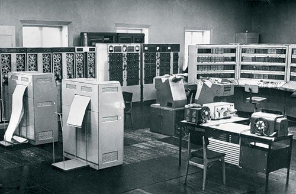
Советские компьютеры... Для большинства читателей это словосочетание наверняка звучит довольно странно, — на протяжении последнего десятка лет найти хотя бы какое-нибудь "железо" российского производства было неразрешимой задачей. Но такая ситуация сложилась именно в последнее десятилетие, — в предыдущие годы компьютеростроение в нашей стране развивалось, и довольно успешно.
Однако в истории советских компьютеров случались и вершины успеха, и пропасть предательства. Да-да — и предательства, приведшего к очень серьезным последствиям.
Обо всем этом и пойдет дальше рассказ.
----------------------
Сколько критических стрел было выпущено за последние годы по поводу состояния нашей вычислительной техники! И что была она безнадежно отсталой (при этом обязательно ввернут про "органические пороки социализма и плановой экономики"), и что сейчас развивать ее бессмысленно, потому что "мы отстали навсегда". И почти в каждом случае рассуждения будут сопровождаться выводом, что "западная техника всегда была лучше", что "русские компьютеры делать не умеют"..
Обычно, критикуя советские компьютеры, акцентируется внимание на их ненадежности, трудности в эксплуатации, малых возможностях. Да, многие программисты "со стажем" наверняка помнят те "зависающие" без конца "Е-Эс-ки" 70-80-х годов, могут рассказать о том, как выглядели "Искры", "Агаты", "Роботроны", "Электроники" на фоне только начавших появляться в Союзе IBM PC (даже и не последних моделей) в конце 80-х — начале 90-х, упомянув о том, что такое сравнение оканчивается отнюдь не в пользу отечественных компьютеров. И это так — указанные модели действительно уступали западным аналогам по своим характеристикам.
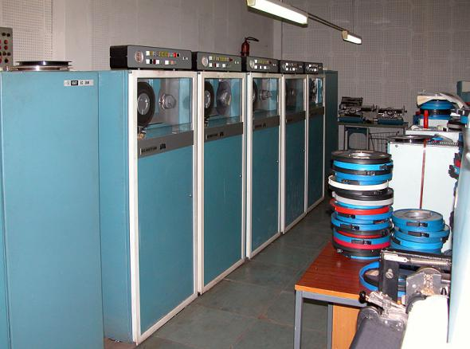
Но стоит заметить, что эти перечисленные марки компьютеров отнюдь не являлись лучшими отечественными разработками, — несмотря на то, что были наиболее распространенными. И на самом деле советская электроника не только развивалась на мировом уровне, но и иной раз опережала аналогичную западную отрасль промышленности!
{kind=link}
Но почему же тогда сейчас мы используем исключительно иностранное "железо", а в советское время даже с трудом "добытый" отечественный компьютер казался грудой металла по сравнению с западным аналогом? Не является ли утверждение о превосходстве советской электроники голословным?
Нет, не является! Почему? Ответ — в этой статье.
Слава наших отцов
Официальной "датой рождения" советской вычислительной техники следует считать, видимо, конец 1948 года. Именно тогда в секретной лаборатории в местечке Феофания под Киевом под руководством Сергея Александровича Лебедева (в то время — директора Института электротехники АН Украины и по совместительству руководителя лаборатории Института точной механики и вычислительной техники АН СССР) начались работы по созданию Малой Электронной Счетной Машины (МЭСМ).

С.А.Лебедев с коллегами
Лебедевым были выдвинуты, обоснованы и реализованы (независимо от Джона фон Неймана) принципы ЭВМ с хранимой в памяти программой.
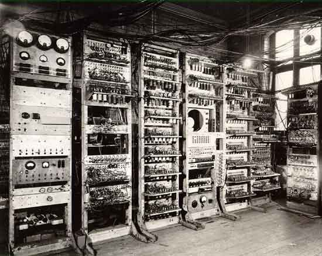
компьютер Baby, построенный Томом Килбурном в Манчестерском университете в 1948 году
В своей первой машине Лебедев реализовал основополагающие принципы построения компьютеров, такие как:
{kind=link}
- наличие арифметических устройств, памяти, устройств ввода/вывода и управления;
- кодирование и хранение программы в памяти, подобно числам;
- двоичная система счисления для кодирования чисел и команд;
- автоматическое выполнение вычислений на основе хранимой программы;
- наличие как арифметических, так и логических операций;
- иерархический принцип построения памяти;
- использование численных методов для реализации вычислений.
Проектирование, монтаж и отладка МЭСМ были выполнены в рекордно короткие сроки (примерно 2 года) и проведены силами всего 17 человек (12 научных сотрудников и 5 техников). Пробный пуск машины МЭСМ состоялся 6 ноября 1950 года, а регулярная эксплуатация — 25 декабря 1951 года.
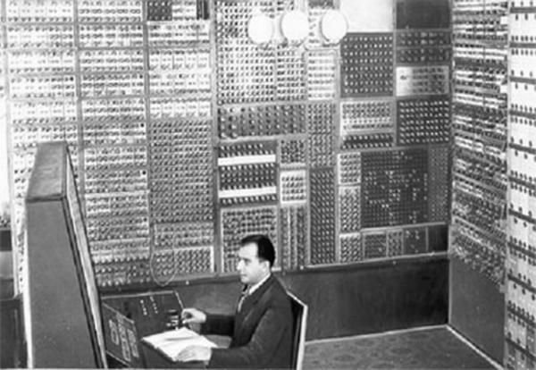
Первое детище С.А.Лебедева - МЭСМ, 1948-1951гг
В 1953 году коллективом, возглавляемым С.А.Лебедевым, была создана первая большая ЭВМ — БЭСМ-1 (от Большая Электронная Счетная Машина), выпущенная в одном экземпляре. Она создавалась уже в Москве, в Институте точной механики (сокращенно — ИТМ) и Вычислительном центре АН СССР, директором которого и стал С.А.Лебедев, а собрана была на Московском заводе счетно-аналитических машин (сокращенно — САМ).
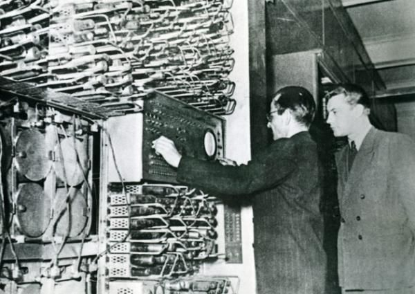
Лебедев у одной из стоек БЕСМ-1
После комплектации оперативной памяти БЭСМ-1 усовершенствованной элементной базой ее быстродействие достигло 10000 операций в секунду — на уровне лучших в США и лучшее в Европе. В 1958 году после еще одной модернизации оперативной памяти БЭСМ, уже получившая название БЭСМ-2, была подготовлена к серийному производству на одном из заводов Союза, которое и было осуществлено в количестве нескольких десятков.

Параллельно шла работа в подмосковном Специальном конструкторском бюро № 245, которым руководил М.А.Лесечко, основанном также в декабре 1948 года приказом И.В.Сталина. В 1950-1953 гг. коллектив этого конструкторского бюро, но уже под руководством Базилевского Ю.Я. разработал цифровую вычислительную машину общего назначения "Стрела" с быстродействием в 2 тысячи операций в секунду. Эта машина выпускалась до 1956 года, а всего было сделано 7 экземпляров. Таким образом, "Стрела" была первой промышленной ЭВМ, — МЭСМ, БЭСМ существовали в то время всего в одном экземпляре.
{kind=link}

ЭВМ "Стрела".
Вообще, конец 1948 года был крайне продуктивным временем для создателей первых советских компьютеров. Несмотря на то, что обе упомянутые выше ЭВМ были одними из лучших в мире, опять-таки параллельно с ними развивалась еще одна ветвь советского компьютеростроения — М-1, "Автоматическая цифровая вычислительная машина", которой руководил И.С.Брук. М-1 была запущена в декабре 1951 года — одновременно с МЭСМ и почти два года была единственной в Российской Федерации действующей ЭВМ (МЭСМ территориально располагалась на Украине, под Киевом).
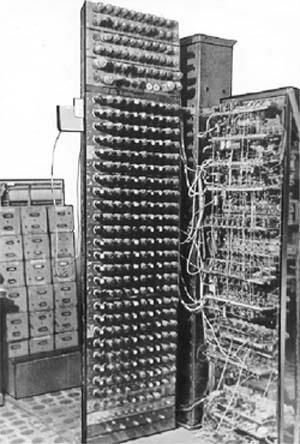
Первая задача, решенная на М1
Однако быстродействие М-1 оказалось крайне низким — всего 20 операций в секунду, что, впрочем, не помешало решать на ней задачи ядерных исследований в институте И. В. Курчатова. Вместе с тем М-1 занимала довольно мало места — всего 9 квадратных метров (сравните со 100 кв.м. у БЭСМ-1) и потребляла значительно меньше энергии, чем детище Лебедева. М-1 стала родоначальником целого класса "малых ЭВМ", сторонником которых был ее создатель И.С.Брук. Такие машины, по мысли Брука, должны были предназначаться для небольших конструкторских бюро и научных организаций, не имеющих средств и помещений для приобретения машин типа БЭСМ.
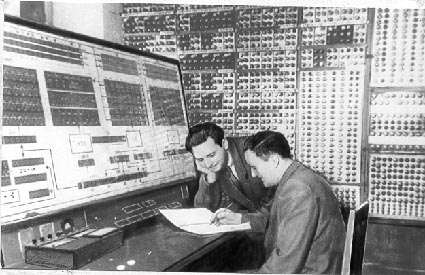
В скором времени М-1 была серьезно усовершенствована, и ее быстродействие достигло уровня "Стрелы" — 2 тысячи операций в секунду, в то же время размеры и энергопотребление выросли незначительно. Новая машина получила закономерное название М-2 и введена в эксплуатацию в 1953 году. По соотношению стоимости, размеров и производительности М-2 стала наилучшим компьютером Союза. Именно М-2 победила в первом международном шахматном турнире между компьютерами.
{kind=link}
В результате в 1953 году серьезные вычислительные задачи для нужд обороны страны, науки и народного хозяйства можно было решать на трех типах вычислительных машин — БЭСМ, "Стрела" и М-2. Все эти ЭВМ — это вычислительная техника первого поколения. Элементная база — электронные лампы — определяла их большие габариты, значительное энергопотребление, низкую надежность и, как следствие, небольшие объемы производства и узкий круг пользователей, главным образом, из мира науки. В таких машинах практически не было средств совмещения операций выполняемой программы и распараллеливания работы различных устройств; команды выполнялись одна за другой, АЛУ ("арифметико-логическое устройство", блок, непосредственно выполняющий преобразования данных) простаивало в процессе обмена данными с внешними устройствами, набор которых был очень ограниченным. Объем оперативной памяти БЭСМ-2, например, составлял 2048 39-разрядных слов, в качестве внешней памяти использовались магнитные барабаны и накопители на магнитной ленте.
Сетунь — первая и единственная в мире троичная ЭВМ. МГУ. СССР.
Завод-изготовитель: Казанский завод математических машин Минрадиопрома СССР. Изготовитель логических элементов — Астраханский завод электронной аппаратуры и электронных приборов Минрадиопрома СССР. Изготовитель магнитных барабанов — Пензенский завод ЭВМ Минрадиопрома СССР. Изготовитель печатающего устройства — Московский завод пишущих машин Минприборпрома СССР.
Год окончания разработки: 1959.
Год начала выпуска: 1961.
Год прекращения выпуска: 1965.
Число выпущенных машин: 50.

В наше время «Сетунь» не имеет аналогов - развитие информатики ушло в русло двоичной логики.
На Западе дело в то время обстояло не слишком лучше. Вот пример из воспоминаний академика Н.Н.Моисеева, ознакомившегося с опытом своих коллег из США: "Я увидел, что в технике мы практически не проигрываем: те же самые ламповые вычислительные монстры, те же бесконечные сбои, те же маги-инженеры в белых халатах, которые исправляют поломки, и мудрые математики, которые пытаются выйти из трудных положений."

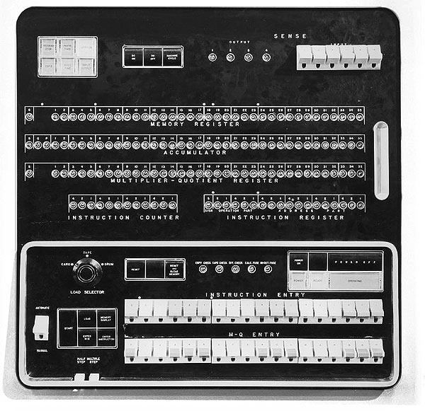
IBM 701
Напомним, что в 1953 г. в США был выпущен компьютер IBM 701 с быстродействием до 15 тысяч операций в секунду, построенный на электронно-вакуумных лампах, бывший наиболее производительным в мире.
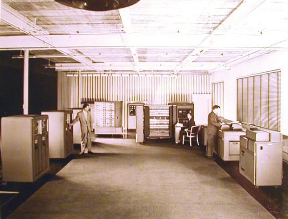
Более производительной была следующая разработка Лебедева — ЭВМ М-20, серийный выпуск которой начался в 1959 году.
{kind=link}

ЭВМ М-20
Число 20 в названии означает быстродействие — 20 тысяч операций в секунду, объем оперативной памяти в два раза превышал ОП БЭСМ, предусматривалось также некоторое совмещение выполняемых команд. В то время это была одна из наиболее мощных и надежных машин в мире, и на ней решалось немало важнейших теоретических и прикладных задач науки и техники того времени. В машине М20 были реализованы возможности написания программ в мнемокодах. Это значительно расширило круг специалистов, которые смогли воспользоваться преимуществами вычислительной техники. По иронии судьбы компьютеров М-20 было выпущено ровно 20 штук.

ЭВМ первого поколения выпускались в СССР довольно долго. Даже в 1964 году в Пензе еще продолжала производиться ЭВМ "Урал-4", служившая для экономических расчетов.
{kind=link}
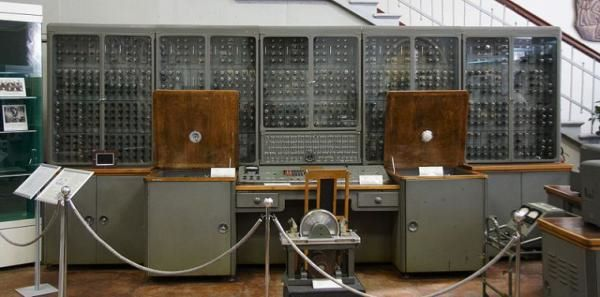
"Урал-1".
Победной поступью
В 1948 году в США был изобретен полупроводниковый транзистор, который стал использоваться в качестве элементной базы ЭВМ. Это позволило разработать ЭВМ с существенно меньших габаритов, энергопотребления, при существенно более высокой (по сравнению с ламповыми компьютерами) надежности и производительности. Чрезвычайно актуальной стала задача автоматизации программирования, так как разрыв между временем на разработку программ и временем собственно расчета увеличивался.
Второй этап развития вычислительной техники конца 50-х — начала 60-х годов характеризуется созданием развитых языков программирования (Алгол, Фортран, Кобол) и освоением процесса автоматизации управления потоком задач с помощью самой ЭВМ, то есть разработкой операционных систем. Первые ОС автоматизировали работу пользователя по выполнению задания, а затем были созданы средства ввода нескольких заданий сразу (пакета заданий) и распределения между ними вычислительных ресурсов. Появился мультипрограммный режим обработки данных. Наиболее характерные черты этих ЭВМ, обычно называемых "ЭВМ второго поколения":
-
совмещение операций ввода/вывода с вычислениями в центральном процессоре;
-
увеличение объема оперативной и внешней памяти;
-
использование алфавитно-цифровых устройств для ввода/вывода данных;
-
"закрытый" режим для пользователей: программист уже не допускался в машинный зал, а сдавал программу на алгоритмическом языке (языке высокого уровня) оператору для ее дальнейшего пропуска на машине.
В конце 50-х годов в СССР было также налажено серийное производство транзисторов.
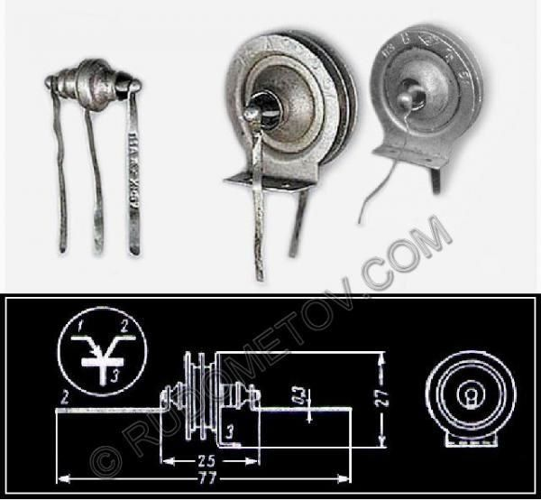
Отечественные транзисторы (1956 г).
Это позволило приступить к созданию ЭВМ второго поколения с большей производительностью, но меньшими занимаемой площадью и энергопотреблением. Развитие вычислительной техники в Союзе пошло едва ли не "взрывными" темпами: в короткий срок число различных моделей ЭВМ, пущенных в разработку, стало исчисляться десятками: это и М-220 — наследница лебедевской М-20, и "Минск-2" с последующими версиями, и ереванская "Наири", и множество ЭВМ военного назначения — М-40 с быстродействием 40 тысяч операций в секунду и М-50 (еще имевшие в себе ламповые компоненты). Именно благодаря последним в 1961 году удалось создать полностью работоспособную систему противоракетной обороны (во время испытаний неоднократно удалось сбить реальные баллистические ракеты прямым попаданием в боеголовку обьемом в половину кубического метра). Но в первую очередь хотелось бы упомянуть серию "БЭСМ", разрабатываемую коллективом разработчиков ИТМ и ВТ АН СССР под общим руководством С.А.Лебедева, вершиной труда которых стала ЭВМ БЭСМ-6 созданная в 1967 году. Это была первая советская ЭВМ, достигшая быстродействия в 1 миллион операций в секунду (показатель, превзойденный отечественными ЭВМ последующих выпусков только в начале 80-х годов при значительно более низкой, чем у БЭСМ-6, надежности в эксплуатации).

Кроме высокого быстродействия (лучший показатель в Европе и один из лучших в мире), структурная организация БЭСМ-6 отличалась целым рядом особенностей, революционных для своего времени и предвосхитивших архитектурные особенности ЭВМ следующего поколения (элементную базу которых составляли интегральные схемы).
{kind=link}

БЭСМ-6
Так, впервые в отечественной практике и полностью независимо от зарубежных ЭВМ был широко использован принцип совмещения выполнения команд (до 14 машинных команд могли одновременно находиться в процессоре на разных стадиях выполнения). Этот принцип, названный главным конструктором БЭСМ-6 академиком С.А.Лебедевым принципом "водопровода", стал впоследствии широко использоваться для повышения производительности универсальных ЭВМ, получив в современной терминологии название "конвейера команд".
БЭСМ-6 выпускалась серийно на московском заводе САМ с 1968 по 1987 год (всего было выпущено 355 машин) — своего рода рекорд! Последняя БЭСМ-6 была демонтирована уже в наши дни — в 1995 году на московском вертолетном заводе Миля. БЭСМ-6 были оснащены крупнейшие академические (например, Вычислительный Центр АН СССР, Обьединенный Институт Ядерных Исследований) и отраслевые (Центральный Институт Авиационного Машиностроения — ЦИАМ) научно-исследовательские институты, заводы и конструкторские бюро.
Интересна в этой связи статья куратора Музея вычислительной техники в Великобритании Дорона Свейда о том, как он покупал в Новосибирске одну из последних работающих БЭСМ-6. Заголовок статьи говорит сам за себя: "Российская серия суперкомпьютеров БЭСМ, разрабатывавшаяся более чем 40 лет тому назад, может свидетельствовать о лжи Соединенных Штатов, объявлявших технологическое превосходство в течение лет холодной войны".
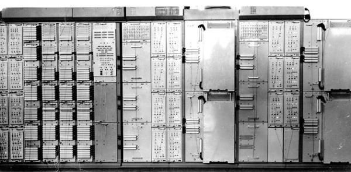
5Э261 — первая в СССР мобильная многопроцессорная высокопроизводительная управляющая система.
В 1966 году над Москвой была развернута система противоракетной обороны на базе
созданной группами С.А.Лебедева и его коллеги В.С.Бурцева ЭВМ 5Э92б с
производительностью 500 тысяч операций в секунду, просуществовавшая до
настоящего времени (в 2002 году должна быть демонтирована в связи с сокращением
РВСН). Была также создана материальная база для развертывания ПРО над всей
территорией Советского Союза, однако впоследствии согласно условиям договора
ПРО-1 работы в этом направлении были свернуты.
Группа В.С.Бурцева приняла активное участие в разработке легендарного
противосамолетного зенитного комплекса С-300, создав в 1968 году для нее ЭВМ
5Э26, отличавшуюся малыми размерами (2 кубических метра) и тщательнейшим
аппаратным контролем, отслеживавшим любую неверную информацию.
Производительность ЭВМ 5Э26 была равна аналогичной у БЭСМ-6 — 1 миллион операций
в секунду.
Информация для специалистов
Работа модулей оперативной памяти, устройства управления и арифметико-логического устройства в БЭСМ-6 осуществлялась параллельно и асинхронно, благодаря наличию буферных устройств промежуточного хранения команд и данных. Для ускорения конвейерного выполнения команд в устройстве управления были предусмотрены отдельная регистровая память хранения индексов, отдельный модуль адресной арифметики, обеспечивающий быструю модификацию адресов с помощью индекс-регистров, включая режим стекового обращения.
Ассоциативная память на быстрых регистрах (типа cache) позволяла автоматически
сохранять в ней наиболее часто используемые операнды и тем самым сократить число
обращений к оперативной памяти. "Расслоение" оперативной памяти обеспечивало
возможность одновременного обращения к разным ее модулям из разных устройств
машины. Механизмы прерывания, защиты памяти, преобразования виртуальных адресов
в физические и привилегированный режим работы для ОС позволили использовать
БЭСМ-6 в мультипрограммном режиме и режиме разделения времени. В
арифметико-логическом устройстве были реализованы ускоренные алгоритмы умножения
и деления (умножение на четыре цифры множителя, вычисление четырех цифр частного
за один такт синхронизации), а также сумматор без цепей сквозного переноса,
представляющий результат операции в виде двухрядного кода (поразрядных сумм и
переносов) и оперирующий с входным трехрядным кодом (новый операнд и двухрядный
результат предыдущей операции).
ЭВМ БЭСМ-6 имела оперативную память на ферритовых сердечниках — 32 Кб
50-разрядных слов, объем оперативной памяти увеличивался при последующих
модификациях до 128 Кб.
Обмен данными с внешней памятью на магнитных барабанах (в дальнейшем и на магнитных дисках) и магнитных лентах осуществлялся параллельно по семи высокоскоростным каналам (прообраз будущих селекторных каналов). Работа с остальными периферийными устройствами (поэлементный ввод/вывод данных) осуществлялась программами-драйверами операционной системы при возникновении соответствующих прерываний от устройств.
Технико-эксплуатационные характеристики:
Среднее быстродействие — до 1 млн. одноадресных команд/с
Длина слова — 48 двоичных разрядов и два контрольных разряда (четность всего
слова должна была быть "нечет". Таким образом, можно было отличать команды от
данных — у одних четность полуслов была "чет-нечет", а у других — "нечет-чет".
Переход на данные или затирание кода ловилось элементарно, как только
происходила попытка выполнить слово с данными)
Представление чисел — с плавающей запятой
Рабочая частота — 10 МГц
Занимаемая площадь — 150-200 кв. м
Потребляемая мощность от сети 220 В/50Гц — 30 КВт (без системы воздушного
охлаждения)
БЭСМ-6 имела оригинальную систему элементов с парафазной синхронизацией. Высокая тактовая частота элементов потребовала от разработчиков новых оригинальных конструктивных решений для сокращения длин соединений элементов и уменьшения паразитных емкостей.
Использование этих элементов в сочетании с оригинальными структурными решениями позволило обеспечить уровень производительности до 1 млн. операций в секудну при работе в 48-разрядном режиме с плавающей запятой, что является рекордным по отношению к сравнительно небольшому количеству полупроводниковых элементов и их быстродействию (около 60 тыс. транзисторов и 180 тыс. диодов и частоте 10 МГц ).
Архитектура БЭСМ-6 характеризуется оптимальным набором арифметических и логических операций, быстрой модификацией адресов с помощью индекс-регистров (включая режим стекового обращения), механизмом расширения кода операций (экстракоды).
При создании БЭСМ-6 были заложены основные принципы системы автоматизации проектирования ЭВМ (САПР). Компактная запись схем машины формулами булевой алгебры явилась основой ее эксплуатационной и наладочной документации. Документация для монтажа выдавалась на завод в виде таблиц, полученных на инструментальной ЭВМ.
Создателями БЭСМ-6 были В.А.Мельников, Л.Н.Королев, В.С.Петров, Л.А.Теплицкий — руководители; А.А.Соколов, В.Н.Лаут, М.В.Тяпкин, В.Л.Ли, Л.А.Зак, В.И.Смирнов, А.С.Федоров, О.К.Щербаков, А.В.Аваев, В.Я.Алексеев, О.А.Большаков, В.Ф.Жиров, В.А.Жуковский, Ю.И.Митропольский, Ю.Н.Знаменский, В.С.Чехлов, общее руководство осуществлял С.А.Лебедев.
Предательство
Вероятно, самым звездным периодом в истории советской вычислительной техники была середина шестидесятых годов. В СССР тогда действовало множество творческих коллективов. Институты С.А.Лебедева, И.С.Брука, В.М.Глушкова — только крупнейшие из них. Иногда они конкурировали, иногда дополняли друг друга. Одновременно выпускалось множество различных типов машин, чаще всего несовместимых друг с другом (разве что за исключением машин, разработанных в одном и том же институте), самого разнообразного назначения. Все они были спроектированы и сделаны на мировом уровне и не уступали своим западным конкурентам.
Многообразие выпускавшихся ЭВМ и их несовместимость друг с другом на программном и аппаратном уровнях не удовлетворяло их создателей. Необходимо было навести мало-мальский порядок во всем множестве производимых компьютеров, например, взяв какой-либо из них за некий стандарт. Но...
В конце 60-х руководством страны было принято решение, имевшее, как показал ход дальнейших событий, катастрофические последствия: о замене всех разнокалиберных отечественных разработок среднего класса (их насчитывалось с полдесятка — "Мински", "Уралы", разные варианты архитектуры М-20 и пр.) — на Единое Семейство ЭВМ на базе архитектуры IBM 360, — американского аналога. На уровне Минприбора не так громко было принято аналогичное решение в отношении мини-ЭВМ. Потом, во второй половине 70-х годов, в качестве генеральной линии для мини- и микро-ЭВМ была утверждена архитектура PDP-11 также иностранной фирмы DEC. В результате производители отечественных ЭВМ были принуждены копировать устаревшие образцы IBM-вской вычислительной техники. Это было начало конца.
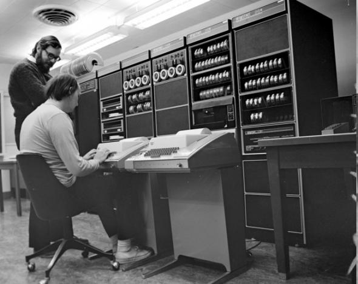
Вот оценка члена-корреспондента РАН Бориса Арташесовича Бабаяна:
{kind=link}
"Потом наступил второй период, когда был организован ВНИИЦЭВТ. Я считаю, что это критический этап развития отечественной вычислительной техники. Были расформированы все творческие коллективы, закрыты конкурентные разработки и принято решение всех загнать в одно "стойло". Отныне все должны были копировать американскую технику, причем отнюдь не самую совершенную. Гигантский коллектив ВНИИЦЭВТ копировал IBM, а коллектив ИНЭУМ — DEC."
Никоим образом не стоит думать, что коллективы разработчиков ЕС ЭВМ выполняли свою работу плохо. Напротив, создавая вполне работоспособные компьютеры (хоть и не очень надежные и мощные), подобные западным аналогам, они справились с этой задачей блестяще, — учитывая то, что производственная база в СССР отставала от западной. Ошибочной была именно ориентация всей отрасли на "подражание Западу", а не на развитие оригинальных технологий.
К сожалению, сейчас неизвестно, кто конкретно в руководстве страны принял преступное решение о сворачивании оригинальных отечественных разработок и развитии электроники в направлении копирования западных аналогов. Возможно, им был либо недостаточно умный человек, не способный компетентно оценить ситуацию в своей отрасли, либо лоббист западных корпораций или правительств, умело внедренный в правительство СССР. Обьективных причин для такого решения не было никаких.
Так или иначе, но с начала 70-х годов разработка малых и средних средств вычислительной техники в СССР начала деградировать. Вместо дальнейшего развития проработанных и испытанных концепций компьютеростроения огромные силы институтов вычислительной техники страны стали заниматься "тупым", да к тому же еще и полузаконным копированием западных компьютеров. Впрочем, законным оно быть не могло — шла "холодная война", и экспорт современных технологий "компьютеростроения" в СССР в большинстве западных стран был попросту законодательно запрещен.
Вот еще одно свидетельство Б.А.Бабаяна:
"Расчет был на то, что можно будет наворовать много матобеспечения — и наступит расцвет вычислительной техники. Этого, конечно, не произошло. Потому что после того, как все были согнаны в одно место, творчество кончилось. Образно говоря, мозги начали сохнуть от совершенно нетворческой работы. Нужно было просто угадать, как сделаны западные, в действительности устаревшие, вычислительные машины. Передовой уровень известен не был, передовыми разработками не занимались, была надежда на то, что хлынет матобеспечение… Вскоре стало ясно, что матобеспечение не хлынуло, уворованные куски не подходили друг к другу, программы не работали. Все приходилось переписывать, а то, что доставали, было древнее, плохо работало. Это был оглушительный провал. Машины, которые делались в этот период, были хуже, чем машины, разрабатывавшиеся до организации ВНИИЦЭВТа..."
Cамое главное — путь копирования заокеанских решений оказался гораздо сложнее, чем это предполагалось ранее. Для совместимости архитектур требовалась совместимость на уровне элементной базы, а ее-то у нас и не было. В те времена отечественная электронная промышленность также вынужденно встала на путь клонирования американских компонентов, — для обеспечения возможности создания аналогов западных ЭВМ. Но это было очень непросто.
Можно было достать и скопировать топологию микросхем, узнать все параметры электронных схем. Однако это не давало ответа на главный вопрос — как их сделать. По сведениям одного из экспертов российского МЭП, работавшего в свое время генеральным директором крупного НПО, преимущество американцев всегда заключалось в огромных инвестициях в электронное машиностроение. В США были и остаются совершенно секретными не столько технологические линии производства электронных компонентов, сколько оборудование по созданию этих самых линий. Результатом такой ситуации стало то, что созданные в начале 70-х годов советские микросхемы — аналоги западных были похожи на американо-японские в функциональном плане, но не дотягивали до них по техническим параметрам. Поэтому платы, собранные по американским топологиям, но с нашими компонентами, оказывались неработоспособными. Приходилось разрабатывать собственные схемные решения.
В цитированной выше статье Свейда делается вывод: "БЭСМ-6 была, по общему мнению, последним оригинальным русским компьютером, что был спроектирован наравне со своим западным аналогом". Это не совсем верно: после БЭСМ-6 была серия "Эльбрус": первая из машин этой серии "Эльбрус-Б" была микроэлектронной копией БЭСМ-6, предоставляла возможность работать в системе команд БЭСМ-6 и использовать программное обеспечение, написанное для нее. Однако общий смысл вывода верен: из-за приказа некомпетентных или сознательно вредящих деятелей правящей верхушки Советского Союза того времени советской вычислительной технике был закрыт путь на вершину мирового Олимпа. Которой она вполне могла достичь — научный, творческий и материальный потенциал вполне позволяли это сделать.
Вот, к примеру, немного из личных впечатлений одного из авторов статьи:
"В период моей работы в ЦИАМ (1983 — 1986 гг.) уже происходил переход смежников — заводов и КБ авиапрома — на ЕС-овскую технику. В связи с этим руководство института начало заставлять руководителей подразделений переходить на только что установленную в институте ЕС-1060 — клон западного IBM PC. Разработчики устроили саботаж этого решения, пассивный, а кое-кто и активный, предпочитая использовать старую добрую БЭСМ-6 пятнадцатилетней давности. Дело в том, что работать на ЕС-1060 в дневное время было практически невозможно — постоянные "зависы", скорость прохождения заданий крайне медленная; в то же время любое зависание БЭСМ-6 рассматривалось как ЧП, настолько они были редки."
Однако отнюдь не все оригинальные отечественные разработки были свернуты. Как уже говорилось, коллектив В.С.Бурцева продолжал работу над серией ЭВМ "Эльбрус", и в 1980 году ЭВМ "Эльбрус-1" с быстродействием до 15 миллионов операций в секунду был запущен в серийное производство. Симметричная многопроцессорная архитектура с общей памятью, реализация защищенного программирования с аппаратными типами данных, суперскалярность процессорной обработки, единая операционная система для многопроцессорных комплексов — все эти возможности, реализованные в серии "Эльбрус", появились раньше, чем на Западе. В 1985 году следующая модель этой серии, "Эльбрус-2", выполнял уже 125 миллионов операций в секунду. "Эльбрусы" работали в целом ряде важных систем, связанных с обработкой радиолокационной информации, на них считали в номерных Арзамасе и Челябинске, а многие компьютеры этой модели до сих пор обеспечивают функционирование систем противоракетной обороны и космических войск.

Весьма интересной особенностью "Эльбрусов" являлся тот факт, что системное программное обеспечение для них создавалось на языке высокого уровня — Эль-76, а не традиционном ассемблере. Перед исполнением код на языке Эль-76 переводился в машинные команды с помощью аппаратного, а не программного обеспечения.
{kind=link}
С 1990 года выпускался также "Эльбрус 3-1", отличавшийся модульностью конструкции и предназначавшийся для решения больших научных и экономических задач, в том числе моделирования физических процессов. Его быстродействие достигло 500 миллионов операций в секунду (на некоторых командах). Всего было произведено 4 экземпляра этой машины.
С 1975 года группой И.В.Прангишвили и В.В.Резанова в научно-производственном обьединении "Импульс" начал разрабатываться вычислительный комплекс ПС-2000 с быстродействием в 200 миллионов операций в секунду, пущенный в производство в 1980 году и применявшийся в основном для обработки геофизических данных, — поиска новых месторождений полезных ископаемых. В этом комплексе максимально использовались возможности параллельного исполнения команд программы, что достигалось хитроумно спроектированной архитектурой.
Большие советские компьютеры, вроде того же ПС-2000, во многом даже превосходили своих зарубежных конкурентов, но стоили гораздо дешевле — так, на разработку ПС-2000 было затрачено всего 10 миллионов рублей (а его использование позволило получить прибыль в 200 миллионов рублей). Однако их сферой применения были "крупномасштабные" задачи — та же противоракетная оборона или обработка космических данных. Развитие средних и малых ЭВМ в Союзе предательством кремлевской верхушки было заторможено всерьез и надолго. И именно поэтому тот прибор, что стоит у вас на столе и о котором рассказывается в нашем журнале, сделан в Юго-Восточной Азии, а не в России.
Катастрофа
С 1991 года для российской науки настали тяжелые времена. Новая власть России взяла курс на уничтожение российской науки и оригинальных технологий. Прекратилось финансирование подавляющего большинства научных проектов, вследствие разрушения Союза прервались взаимосвязи заводов-производителей ЭВМ, оказавшихся в разных государствах, и эффективное производство стало невозможным. Многие разработчики отечественной вычислительной техники были вынуждены работать не по специальности, теряя квалификацию и время. Единственный экземпляр разработанного еще в советское время компьютера "Эльбрус-3", в два раза более быстрого, чем самая производительная американская супермашина того времени Cray Y-MP, в 1994 году был разобран и пущен под пресс.

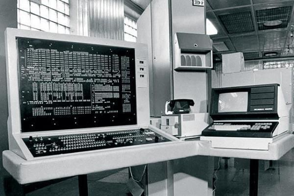
"Эльбрус-3".
Некоторые их создателей советских компьютеров уехали за границу. Так, в настоящее время ведущим разработчиком микропроцессоров фирмы Intel является Владимир Пентковский, получивший образование в СССР и работавший в ИТМиВТ — Институте Точной Механики и Вычислительной Техники имени С.А.Лебедева. Пентковский принимал участие в разработке упоминавшихся выше компьютеров "Эльбрус-1" и "Эльбрус-2", а затем возглавил разработку процессора для "Эльбруса-3" — Эль-90. Вследствие целенаправленной политики уничтожения российской науки, ведущейся правящими кругами РФ под влиянием Запада, финансирование проекта "Эльбрус" прекратилось, и Владимир Пентковский был вынужден эмигрировать в США и устроиться на работу в корпорацию Intel. Вскоре он стал ведущим инженером корпорации и под его руководством в 1993 году в Intel разработали процессор Pentium, по слухам, названный так именно в честь Пентковского. Пентковский воплощал в Intel'овских процессорах те советские ноу-хау, которые знал сам, многое додумывая в процессе разработки, и к 1995 году фирма Intel выпустила более совершенный процессор Pentium Pro, который уже вплотную приблизился по своим возможностям к российскому микропроцессору 1990 года Эль-90, хоть и не догнал его. В настоящее время Пентковский разрабатывает следующие поколения процессоров Intel. Так что процессор, на котором, возможно, работает ваш компьютер, сделан именно нашим соотечественником и мог бы быть российского производства, если бы не события после 1991 года.
Еще теплится жизнь в оборонном комплексе, однако новых разработок в этой области практически не ведется. Выпускаются военные ЭВМ, например, ЭВМ 40У6 или бортовая ЭВМ А-40, однако все они были разработаны в 70-80-е годы.
Несмотря на трудности, продолжаются разработки над наследником "Эльбрусов" — процессором E2k ("Эльбрус-2000"), которыми занимается фирма "Эльбрус" (созданная на базе ИТМиВТ имени С.А.Лебедева, сайт — www.elbrus.ru). Руководитель фирмы — уже упоминавшийся выше Б.А.Бабаян. Уже опытные образцы E2k в 1999 году по многим параметрам превосходили Intel'овский Merced. Для окончательной реализации проекта в настоящее время финансирования не хватает, однако по заказу Министерства Обороны проектируются урезанные версии E2k для использования в военных технологиях. Вместе с тем работы Б.А.Бабаяна зачастую подвергаются справедливой критике, — например, со стороны В.С.Бурцева (http://www.electronics.ru/ showArticle.phtml?id=4900511), что показывает наличие некоторых проблем в развитии данного проекта.
Для иллюстрации сказанного можно привести слова Б.А.Бабаяна:
"Сейчас в послесуперскалярном мире есть всего три места, где разрабатывается архитектура широкого командного слова. Одно место — это Москва, наш коллектив и серия "Эльбрус", второе — это Hewlett-Packard и Intel, и третье место — это Transmeta вместе с IBM и Texas Instruments. Все! Больше никто не владеет этой технологией. Эта технология не появится сама собой из ниоткуда. Для того чтобы ее разработать, нужно 10 лет. Конечно, ее можно заимствовать. Это всегда быстро. Но независимо ее разрабатывать очень долго. Это подчеркивает важность работ нашего коллектива".
Многие НИИ переключились на создание крупных вычислительных систем на основе импортных компонентов. Так, в НИИ “Квант” под руководством В.К.Левина ведется раззработка вычислительных системы МВС-100 и МВС-1000, основанных на процессорах Alpha 21164 (производства DEC-Compaq). Однако приобретение такого оборудования затруднено действующим эмбарго на экспорт в Россию высоких технологий, возможность же применения подобных комплексов в оборонных системах крайне сомнительна, — никто не знает, сколько в них можно найти "жучков", активирующихся по сигналу и выводящих систему из строя.
На рынке же персональных ЭВМ отечественные компьютеры отсутствуют полностью. Максимум, на что идут российские разработчики — это сборка компьютеров из комплектующих и создание отдельных устройств, например, материнских плат, — опять-таки из готовых компонентов, при этом размещая заказы на производство на заводах Юго-Восточной Азии. Однако и таких разработок весьма мало (можно назвать фирмы "Аквариус", "Формоза"). Развитие же линии "ЕС" практически остановилось, — зачем создавать свои аналоги, когда проще и дешевле купить оригиналы? Хотя стоит сказать, что компьютеры этой серии в малом количестве производятся и сейчас (например, ВМ2500, ВМ3500), но уже с широким использованием импортных комплектующих, и применяются в специализированных системах МВД, ГИБДД, СМП.
Исторические факты:
1948 — 1958 гг., первое поколение ЭВМ
1947-1948 г. - начало работ по созданию в Институте электроники Академии наук Украины под руководством академика Сергея Алексеевича Лебедева первой отечественной первая универсальной ламповой ЭВМ - МЭСМ (малой электронной счетной машины).
1948 г. - И. С. Брука получил диплом на изобретение ЭВМ и представил проект создания такой машины, названной М-1. В декабре И. С. Брук и Б. И. Рамеев получили авторское свидетельство на изобретение "Автоматическая цифровая электронная машина". Из-за организационных трудностей работы затянулись.
1950 г. - вступает в действие первая в СССР вычислительная электронная цифровая машина МЭСМ, самая быстродействующая тогда в Европе, а в 1951 году она официально вводится в эксплуатацию.
1952 г. - началась практическая эксплуатация ЭВМ М-1, разработанной под руководством И. С. Брук. За М-1 последовали М-2. Ее разработку выполнила группа выпускников МЭИ, возглавляемая М.А.Карцевым. Затем была выпушена машина М-3. ЭВМ М-3 занимает особое место в развитии вычислительной техники. С некоторыми модификациями она была повторена в Ереване, Минске, а также за рубежом - в Китае и Венгрии, где послужила основой для развития математического машиностроения.
1953 г. - в Академии наук СССР (Москва), вводится в эксплуатацию БЭСМ (большая электронная счетная вычислительная машина), разработанная в Институте точной механики и вычислительной техники АН СССР. под руководством С.А.Лебедева. БЭСМ относится к классу цифровых вычислительных машин общего назначения, ориентированных на решение сложных задач науки и техники.
1953 г. в Москве, в СКБ Министерства машиностроения и приборостроения под руководством Ю. Я. Базилевского и Б. И. Рамеева закончена разработка серийной ЭВМ "Стрела" общего назначения.
1954 г. - начался серийный выпуск ЭВМ "Стрела". Серия оказалась очень маленькой: всего за четыре года было выпущено семь машин. Тем не менее 1954 г. - это год становления отечественной индустрии ЭВМ.
1955 г. - институт точной механики и вычислительный техники АН СССР ввел усовершенствования в Большую ЭВМ "БЭСМ", повысившие её быстродействие до 8000 операций в секунду.
1956 г. - в СССР Госкомиссии представлена ЭВМ М-3, разработанная инициативной группой (И. С. Брук, Н.Я.Матюхин, В.В.Белынский, Г.П.Лопато, Б.М.Каган, В.М.Долкарт, Б.Б.Мелик-Шахназаров).
1956 г. - разработана ЭВМ БЭСМ-2. Руководитель разработки - С.А.Лебедева
1957 г. - завершена разработка одной из наиболее совершенных чисто релейных вычислительных машин РВМ-1. Машина сконструирована и построена под руководством советского инженера И. И. Бессонова (начало постройки относится к 1954 году).
1957 г. - в Пензе под руководством Б. И. Рамеева создана одноадресная ламповая ЭВМ "Урал-1"общего назначения, ориентированных на решение инженерно-технических и планово-экономических задач. Она положилая начало целому семейству малых ЭВМ "Урал".
1958 г. - введена в эксплуатацию ЭВМ M-20 (Казань) Разработка выполнена ИТМ и ВТ совместно с СКБ-245. Руководитель: С.А.Лебедев, заместитель главного конструктора М. К. Сулим, М. Р. Шура-Бура. М-20 - цифровая электронная вычислительная машина общего назначения, ориентированная на решение сложных математических задач. Она послужила исходной моделью семейства совместимых вычислительных машин М-220 и М-222.
1958 г. - начало выпуска в Ульяновске БЭСМ-2 (С.А.Лебедев, В.А.Мельников).
1958 г. - в институте кибернетики АН УССР разработана электронная цифровая вычислительная машина “КИЕВ”, предназначенная для решения широкого круга научных и инженерных задач.
1958 г. - в Ереване под руководством Ф.Т. Саркисяна (Б.Б.Мелик-Шахназаров) создана ЭВМ "Раздан".
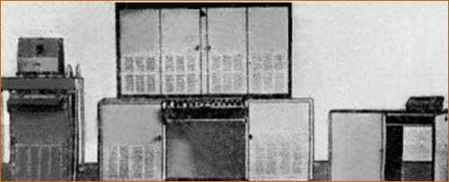
Раздан-2
1958 г. - под руководством Н.П. Брусенцова в вычислительном центре Московского университета была создана и запущена в производство первая и единственная в мире троичная ЭВМ "Сетунь". “Сетунь” - малая цифровая вычислительная машина, предназначенная для решения научно-технических и экономических задач средней сложности. Серийно выпускалась 1962-1964.
1959 г. - созданы опытные образцы ЭВМ М-40, М-50 для систем противоракетной обороны (ПРО). Разработчики - С.А.Лебедев и В.С.Бурцев (Ленинская премия 1966 г. за специализированный автоматизированный комплекс обработки информации для системы ПРО на базе этих ЭВМ).
1959 г. - начало выпуска в Минске ЭВМ "Минск-1" применялась в основном для решения инженерных, научных и конструкторских задач математического и логического характера. (Г.П.Лопато).
1959 г. - в СССР была введена в эксплуатацию первая ламповая специализированная стационарная ЭВМ СПЕКТР-4 предназначенная для наведения истребителей-перехватчиков.
1959 г. - под руководством Я.А.Хетагурова (ЦМНИИ-1) создана первая в СССР мобильная полупроводниковая ЭВМ "КУРС" для обработки радиолокационной информации.
1959 г. - универсальная ЭВМ «Киев»

ЭВМ «Киев»
1960 г. - в СССР разработана первая полупроводниковая управляющая машина "Днепр" (В.М.Глушков, Б.Н. Малиновский).

1960 г. - создана первая микропрограммная специализированная ЭВМ "Тетива" для системы ПВО. Производство в Минске. Главный конструктор Н.Я.Матюхин.
1961 г. - начат серийный выпуск ЦВМ “Раздан-2”, предназначена для решения научно-технических и инженерных задач, малой производительности (скорость вычислений - до 5 тысяч операций в 1 секунд).
1961 г. - в СССР создана первая в стране серийная универсальная полупроводниковая управляющая ЭВМ широкого назначения "Днепр-1" (В.М.Глушков, Б.Н. Малиновский). Выпускалась на протяжении 10 лет.
1961 г. - начало выпуска "Урал-4" (Пенза). Руководитель работ - Б.И.Рамеев.
1962 г. - в ИТМиВТ выпущена ЭВМ БЭСМ-4.
1962 г. - в Северодонецком научно-исследовательском институте управляющих вычислительных машин создана “МППИ-1” - машина первичной переработки информации - информационно-вычислительная машина. Применялась “МППИ-1” в химической, нефтеперерабатывающей, металлургической и других отраслях промышленности.
1962 г. - создан опытный образец ЭВМ "Восток" (А.Н.Мямлин).
1962 г. - в Институте кибернетики АН УССР разработано семейство малых цифровых электронных вычислительных машин “Промiнь”, предназначенных для автоматизации инженерных расчетов средней сложности.
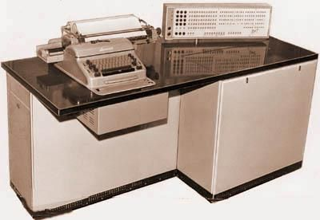
1962 г. - разработана первая в Украине ЭВМ с асинхронным управлением "Киев" (В.М.Глушков, Е.Л.Ющенко, Л.Н.Дашевский). Запуск ее в ОИЯИ (Дубна).
1962 г. - начало выпуска ЭВМ "Минск-2" с использованием импульсно потенциальной элементной базы и введением представления данных в виде двоично-десятичных чисел и алфавитно-цифровых слов (Минск) (С 1965 г. – "Минск-22"). В.В.Пржиялковский.
1963 г. - начало серийного производства малой ЭВМ для инженерных расчетов "Промiнь" на Северодонецком заводе вычислительных машин. В ней использовалось ступенчатое микропрограммное управление (С.Б.Погребинский, В.Д.Лосев).
1963 г. - начало выпуска ЭВМ "Минск-32" (Минск) с внешней памятью на сменных магнитных дисках (В.Я.Пыхтин).
1963 г. - создан многомашинный вычислительный комплекс "Минск-222" (Г.П.Лопато).
1964 г. - в Ереванском научно-исследовательском институте математических машин разработана и запущена в производство ЭВМ с микропрограммным управлением "Наири".
1964 г. - начало выпуска ряда ЭВМ Урал; Урал-11, Урал-14, Урал-16 (с 1969 г.) с операциями над словами переменной длины и структурной адресацией (Б.И.Рамеев, В.И.Бурков, А.Н.Невский, Г.С.Горшков, А.С.Горшков, В.И.Мухин).
1964 г. - начало выпуска электронная цифровая вычислительная машина общего назначения "Весна". Производство в Минске. Гавный конструктор В.С.Полин (В.К.Левин, М.Р.Шура-Бура, В.С.Штаркман, В.А.Слепушкин, Ю.А.Котов).
1965 г. - группой инженеров в Институте точной механики и вычислительной техники под руководством С.А.Лебедева была создана мощная полупроводниковая ЭВМ БЭСМ-6 ("Быстродействующая электронно-счетная машина"). БЭСМ-6 занимает особенно важное место в развитии и использовании вычислительной техники в СССР. Это первая в СССР суперЭВМ с производительностью 1 миллион оп/сек.
1965 г. - в Киеве Институте кибернетики АН УССР создана машина МИР-1. Разработчики В.М.Глушков, Ю.В.Благовещенский, А.А.Летичевский, А.А.Летинский, В.Д.Лосев, И.Н. Молчанов, С.Б. Погребинский, А.А.Стогний,. З.Л.Рабинович.
1965 г. - начало выпуска в Казани полупроводниковых ЭВМ М-220 и М-222 с производительностью до 200 тыс. оп/сек, продолжающих линию ЭВМ М-20. Предназначены для решения научно-технических, а также отдельных классов экономических задач. Главный конструктор М.К.Сулим.
1965 г. - в Ереванском научно-исследовательском институте математических машин выпущена модификация ЭВМ "Наири-М".
1965 г. - создан макет ЭВМ с системой счисления в остаточных классах (И.Я.Акушский, Д.И.Юдицкий). Технический проект ЭВМ "Украина" с развитыми системами интерпретации. В.М.Глушков, З.Л.Рабинович, А.А.Стогний.
1966 г. - завершается разработка проекта большой ЭВМ "Украина", предвосхитившего многие идеи американских больших ЭВМ 70-х годов.
1966 г. - начат серийный выпуск ЦВМ “Раздан-3”, предназначенной для решения научно-технических, планово-экономических и статистических задач.
1966 г. - для командных пунктов ПВО в СССР была создана мощная по тем временам специализированная ЭВМ ГРАНИТ (А.З.Шостак).
1967 г. - начало выпуска в Киеве заводе ВУМ управляющей ЭВМ "Днепр-2". Разработка Института кибернетики АН Украины (В.М.Глушков, А.Г.Кухарчук).
1967 г. - в Ереванском научно-исследовательском институте математических машин выпущена модификации ЭВМ "Наири-С" и "Наири-2".
1967 г. - ввод в действие электронной счетной машины БЭСМ-6 в Вычислительном центре АН СССР. Начало ее серийного производства на заводе счетно-аналитических машин (САМ) в Москве. За все время (до начала 80-х гг.) было построено около 350 БЭСМ-6.
1968 — 1973 гг., третье поколение ЭВМ
1968 г. - проект полностью параллельной вычислительной системы М-9 с производительностью порядка 10 оп/сек. В М-9 операции задавались над функциями двух переменных. М.А.Карцев.
1968 г .- начало производства ЭВМ МИР-2, созданной под руководством В.М.Глушкова в Киеве.
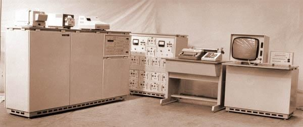
1969 г. - “РУТА-110” - комплекс устройств обработки, ввода, хранения, вывода, а также дистанционного сбора и выдачи алфавитно-цифровой информации, предназначенный для создания локальных систем обработки данных. Разработан СКВ вычислительных машин (г. Вильнюс).
1969 г. 5Э92Б - двухпроцессорный компьютер на дискретных полупроводниковых схемах, основной компьютер в первой системе ПРО Москвы;
1970 г. - создана многомашинная система коллективного пользования "АИСТ-0" на базе нескольких М-20 под управлением "Минск-32". Разработчики А.П.Ершов, Г.И.Кожухин, Г.П.Макаров, М.И. Нечепуренко, И.В.Поттосин.
1970 г. - в Ереванском научно-исследовательском институте математических машин выпущена модификации ЭВМ "Наири-3" и "Наири-3-1" (на интегральных гибридных микросхемах).
1971 г. - начало выпуска модели ЕС-1020 (20 тыс. оп/сек), Минск. В.В.Пржиялковский.
1973 г. - начало выпуска модели ЕС-1030 (100 тыс. оп/сек), Казань (разработка выполнена в Ереване, М. Семирджан).
1973 г. - с использованием БЭСМ-6 была создана многомашинная система с переменной структурой АС-6 для задач управления космическими полетами в СССР. 1973 г. - начало выпуска ЭВМ ЕС-1050 (Москва, Пенза). В.С.Антонов.
1973 г. - начало выпуска высокопроизводительной ЭВМ с многоформатной векторной RISC-архитектурой для систем предупреждения о ракетном нападении и общего наблюдения за космическим пространством М-10 (Загорск, М.А.Карцев).
Разумеется, не все еще потеряно. Остались и описания технологий, иной раз даже по прошествии десяти лет превосходящих западные, и действующие образцы. К счастью, не все разработчики отечественной вычислительной техники уехали за границу или умерли. Так что шанс еще есть. А будет ли он реализован — зависит уже от нас.
Про проклятие старых компьютеров
 Итак,
представьте: первые огромные машины (как на фотографии), а программирование
только набирает силу. Программистами идут самые передовые, самые перспективные
студенты и ученые: те кому чужды суеверия; те, кто каждую проблему решает только
с позиции материализма и математики.
Итак,
представьте: первые огромные машины (как на фотографии), а программирование
только набирает силу. Программистами идут самые передовые, самые перспективные
студенты и ученые: те кому чужды суеверия; те, кто каждую проблему решает только
с позиции материализма и математики.
И тут обнаруживается дикая вещь - если в комнату с работающим компьютером-шкафом зайдет девушка, компьютер начинает работать не стабильно. Получается какая-то мистика - компьютеры "чувствуют" женское присутствие, и "отвлекаются" на них в ущерб точности расчетов.
Когда набралась "статистика" и от этого уже не получалось просто отмахиваться, пошли обычным средневековым путем: женщин перестали пускать к работающим компьютерам - хоть суеверия нам чужды, но так спокойней. И действительно, ситуация улучшилась - без женщин компьютеры работали снова стабильно. Особые интеллектуалы заговорили загадками - мол мы видим зарождение ИИ - искуственного интеллекта. Как он мог зародиться в груде проводов, что это такое, и почему Оно возбуждается на женщин, а не на стулья, карандаши или штукатурку - обьяснить никто не брался. Но факт оставался фактом.
Решение мистической задачи было, как всегда, изящным и до смешного неожиданным. Напомним, что в это время только появились и сразу вошли в моду синтетические ткани - нейлон, лайкра, кримплен, винил, дралон и прочие “-лоны”, “-ланы”,”-лены”. Одежда преобразилась - и конечно самые прогрессивные девушки (а с компьютерами другие и не работали) стали тут же носить все их синтетики - и белье, и платья - т.е. все самое модное и прогрессивное. При движении ткани терлись одни об другие - и вырабатывалось довольно много статического электричества. Не знаю, какая разность потенциалов при этом вырабатывалась, но первые хрупкие компьютеры сходили с ума именно от этого.
Когда женщин-программисток переодели в хлопок, компьютеры перестали на них отвлекаться. Мистическая загадка была разгаданна - и жизнь пошла своим чередом, без ненужных забобонов и суеверий.
Вот такая история - хотите верьте, хотите нет.